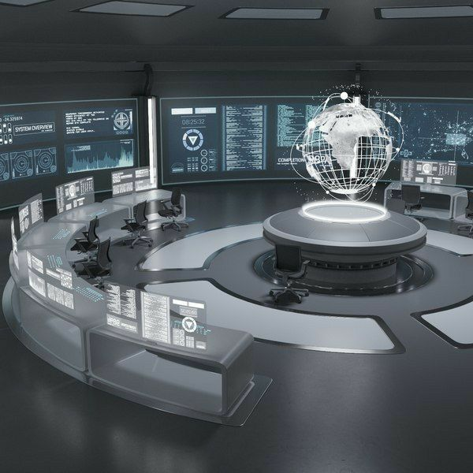

The solar vortex:
Where scientsts and space Ethusiasts connect.

solar vortex: is a platform that provides scientists and space Ethusiasts with a comprehensive
resource for learning about the planets and their current state.
The platform uses variety of high technolgy tool including probe and telescopes to gather data,
images and videos of the planets to creat detailed and informative reports
as well as visualization of the planets' features.
Its key features is to provide scientists with a real time view of the planets by
by gathering live data around the planets.
valuable resource for the scientists who are planing misssions to the planets.
About
our rockets at work
Whith solar vortex you can:
. Book tour,
we have space enthusiasts who usually go to the space, for exploration
and new discouveries conserning the realtime science in the planets.
to became a member you can book a tour and get directed on what next.
. Learn about the planets:
Solar vortex provides comprensive information abiut each planet in our solar system
including its physical characteristics, atmosphere, history, and current state of exploration.
. Explore the planets through photos and videos:
Its features collection are of high-resolution photos, and videos of the plannets,
taken by scientists and space probes. this allows you to explore the planets in details.
And get a close up look of their unique features.
. Stay up -to-date on the latest research:
Solar vortex blogs provides real-time information on the latest research,
and the latest discouveries about the planets and space .
This is a great way to stay informed about the latest developments in
planetary science and exploration
Blogs and Articles
latest solar news
images of the day
videos of the week
Solar system trivia
sola system Q&A
DIY projects
Solar system for kids
History to solar exploration
The nine planets
Moons of the solar system
Astroids and comets
The sun & atmosphere
The solar winds
Magnetic fields
space wheather
Future of solar exploration
= ` `
Gallery
The solar vortex gallery is a collection of images and videos from all the planets
complied to help you as scientist and space explorer
, study and get real-time information on each planet.
the gallery is powered by the solar vortex software, which uses artificial intelligence
and high technolgy probes including telescopes to gather information,
images, videos from variety of sources.
The solar vortex is a valuable resource for scientists who are styding the planets
It allows them to quickly access a wide range of data whithout having
to spend time on serching for and curating it themselves, the gallery is also a
great way for the public to learn more about the tha planets and
see the latest images and videos.
The smallest and about 58m kilometers from the sun
Its about 475 degrees celsius, being the hotest
It has a diverse geology and its the only planet supoting life
Contains deserts,canyons,polar ice caps, largest volcano etc.
jupiter is more massive than all other planets
Mostly known for its stunning ring system containing icy particles
its unique, it rotates on its own side with axial tilt of about 98 degrees
About 2.8billion miles from the sun, has a faint system of rings
latest to be discovered,and also reffered to as planet X why?
Testimonial from our Astronauts
Neil Aiden Armstrong
"Research is creating new knowledge.
knowledge is funtamental to all human beings achievments and progress. it is both the key and the quest that advances mankind
" I have understood the importance of scientific research innovation. I believe that there are key to better fure in
space for humanity.
Edwin Eugene Aldrin
Space exploration is not just about going to moon and mars,Learning more about our univers
and our places in it. its expanding our horizons and pushing what is possible. importantly
it pushed us to the limits of oue techs and scientific capabilities.
David Randolph Scott
"when i stand here on the moon and look back at the earth I realize that man was created to explore univers."
For when i look at the moon I dont see a hostile, empty world, I see a radiant body where man has taken his first
step into a endless frontier.
Charles Moss Duke jr.
"space is the most beautiful i have ever been it's a awe-inspiring . it makes you feel small but it also makes you feel beings
. Its a humbling experience. space exploration future of humanity its how we are going to expand our horizons
and learn more about ourselves and future of the universe."


 Neil
Neil  Edwin
Edwin  David
David  Charles
Charles